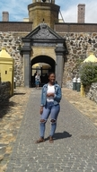

Babazile Mpongoza
Maldives Island

The Maldives is a tropical nation in the Indian Ocean composed of 26 ring-shaped atolls, which are made up of more than 1,000 coral islands. It is known for its beaches, blue lagoons and extensive reefs. The capital, Malé , has a busy fish market, restaurants and shops on the main road, Majeedhee Magu, and 17th-century Hukuru Miskiy (also known as Friday Mosque) made of carved white coral.
The French Language
| English | English |
|---|---|
| hello | bon'jor |
| I'm fine and you | Je vais et vous |
| I've always dreamed of coming here | J' ai toujours reve de venir ici |
The District six
District Six was a multi working-class area just off the centre of Cape Town,to the south of the Castle. Today it is an almost vacant lot,shown on maps as the suburb of Zonnebloem. Before being torn apart by the apartheid regime during the sixties and seventies.District Six, was an impoverished but lively community of 55 000, predominantly coloured people. It was once known as the soul of Cape Town, this inner-city area harboured a rich cultural life in its narrow alleys and crowded tenements.
The Parliamant of RSA

In democratic countries such as South Africa, the legislature or Parliament plays a very important role. The members of Parliament are elected to represent the people of the country. They also act as the voice of the people. Parliament, therefore, is accountable to the people of South Africa. Every five years the people of South Africa get an opportunity to cast their votes for a new Parliament. Each new Parliament is numbered. For example, in the elections of 1994 people voted for the First Parliament.
The Castle of Good Hope
The Castle of Good Hope is the oldest surviving building in South Africa and has been the centre of civilian, political and military life in the Cape since 1666. In its current state, the Castle is considered to be one of the best examples of preserved 17th century DEIC architecture in the world. The Castle is currently undergoing renovation – for the first time in 20 years – which will further enhance its appeal and position it well to become South Africa’s next UNESCO World Heritage Site. Today, the Castle stands not only as a reminder of Cape Town’s colonial past, but as a beacon of the city’s future. Popular with locals and visitors alike, art and photography exhibitions are often hosted within its five walls, as are some of the city’s premier commercial events.